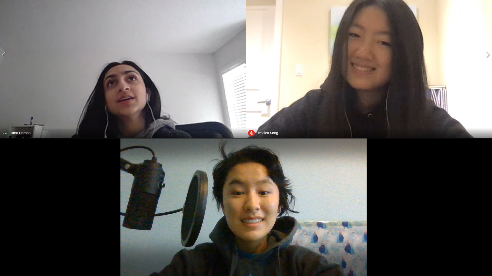
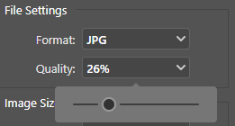
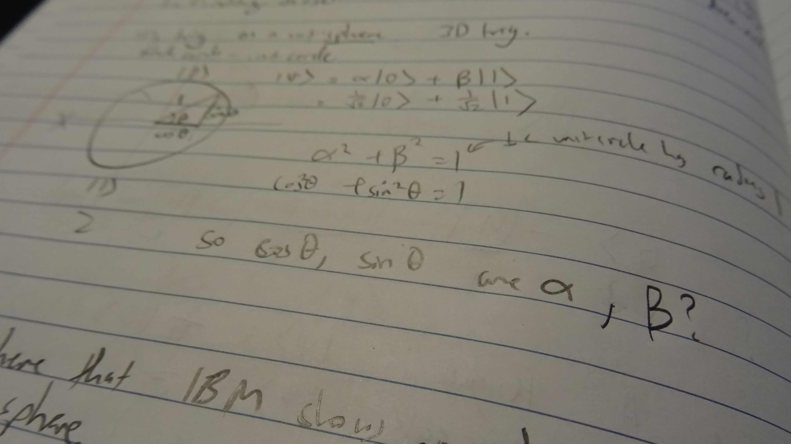
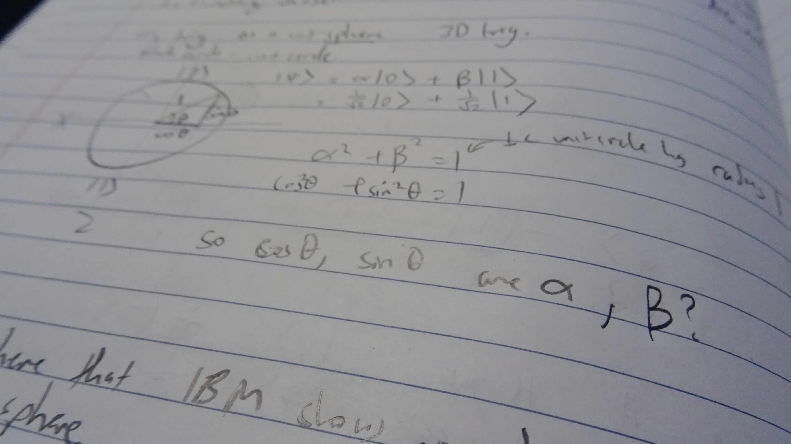
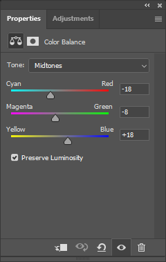
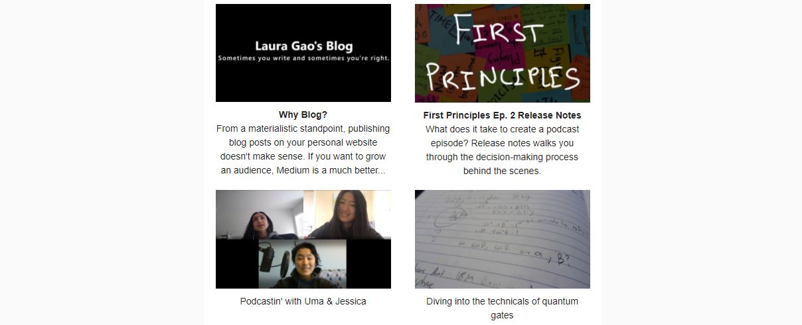

December Newsletter - Release Notes
Total time spent: 6.5h
- 30 mins: Dec 30 7-7:30 AM. Storyboarding
- 30 mins: Dec 30 11:35-12:05 PM
- 2h: Dec 31 1:30-3:30 PM
- 3.5h: Dec 30 6-9:30 PM (There goes my get ready for bed by 8...)
Total time spent: 6.5h
A big goal for this newsletter was to get it sent out before January. This is the first newsletter I sent before the end of the month.
- September newsletter: Sent Oct 7, 9:57 PM
- October newsletter: Sent Nov 22, Morning
- November newsletter: Sent Dec 11, 9:59 PM
- December newsletter: Sent Dec 31 🎉
Notes:
Every photo except for meeting screenshots has been passed through Photoshop. For 2 main reasons:
- Colour balancing — My room's lights are atrociously yellow-orange. These pictures would look unprofessional and hurt your eyes without colour balancing. Just compare this:
- Converting to JPG and reducing file size — JPEGs use less space than PNGs just for being JPGs.
But that's just with the file conversion. Additionally, you can reduce the quality on Photoshop's export settings:
This exact file is 1.4 MB as a PNG and 0.6 MB as a JPEG. The raw files from my camera are 3-4 MB. I change them to about 1MB each. Now that I think about it, 1MB is still a lot 😔 I'll probably make the files even smaller in the next newsletter.


Maybe I went overboard and it's a bit too blue...

The colour balance settings of the cube picture.

It's okay if they're lower quality, right? No one zooms in on these tiny newsletter pictures... right?